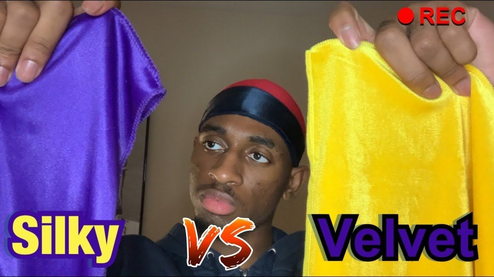

The Best Durag for 360 Waves: A Buying Guide Without the Hype
Type 'best durag for waves' into any search bar and you will drown in sponsored lists. Ignore the rankings and learn the criteria instead — a durag is a simple product, and exactly four things decide whether it will train your waves well: fabric, tail length, seam quality, and stretch behaviour. Seamade KJ's (@seamadekj1683) fabric comparison below covers the first criterion in depth. This guide ranks all four and tells you what to check before money moves.
Criterion 1: Fabric that can hold a tie
For wave training you want a fabric with body — enough weight that the tie stays where you put it and the cape lies flat instead of clinging and bunching. Silky satin-weave is the standard; velvet is the grip alternative. Whatever the fabric, run the tie test mentally: will this hold a knot or tuck through eight hours of pillow contact? Paper-thin fashion durags fail this test regardless of how good they look in photos.
Hold the fabric to the light. A training durag should be essentially opaque — if you can see your hand clearly through it, it is too thin to compress seriously.
Criteria 2 and 3: Tails and the seam
Long tails are not a style choice; they are leverage and security. Tails should reach comfortably around your head twice with length to spare for the knot or tuck. Short tails force a tight, small knot that slips and digs — the single most common complaint about bargain durags. If the listing does not state tail length, that silence is your answer.
The centre seam must be flat and even. Raise your standards here: a raised or crooked seam prints a line into your hair overnight, exactly where you are trying to build a pattern. Check the seam stitching for evenness — puckering along the seam means it was sewn fast, and it will misbehave on your head the same way.
Criterion 4: Stretch that recovers
Good durag fabric stretches a little and returns. Stretch without recovery is how a durag fits perfectly in week one and flops by week four. When you can handle the product, stretch the cape gently and watch it come back; when shopping online, favour brands that describe their construction — dual-layer builds and reinforced bands exist precisely to solve the stretch-out problem.
Buy two when you find a good one: a rotation extends the life of both, since fabric rested between wears recovers better than fabric worked nightly. Your waves are a daily system — their most important tool deserves a backup.
Watch: silky vs velvet from Seamade KJ — fabric is decision one in this buying guide
Video: “SILKY vs VELVET Durags! Which Durag Is The BEST !!” by Seamade KJ (@seamadekj1683) · Watch on YouTube
Shop the gear
Everything in this guide runs on the right gear: a durag that holds compression without slipping, a cap that stays put, and fabric that treats your hair right. The durag.store launch lineup is built to that standard — dual-layer construction, long tails, and stitching made to survive the routine. Join the launch list and use code GOLDSTANDARD for 15% off your first order.
Keep learning
- Reading a Durag Like a Buyer: Stitching, Tails and Fit Checks — Basic · Buying Guides
- Durag Sizing and Tail Length: Getting the Numbers Right — Intermediate · Buying Guides
- Pomade Types for Waves: Water-Based, Oil-Based and Everything Between — Basic · Buying Guides
Sources: Video — “SILKY vs VELVET Durags! Which Durag Is The BEST !!” by Seamade KJ (@seamadekj1683), youtube.com. Guide written by the durag.store Wave Lab.